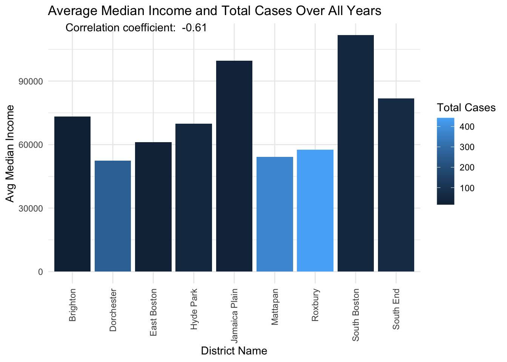
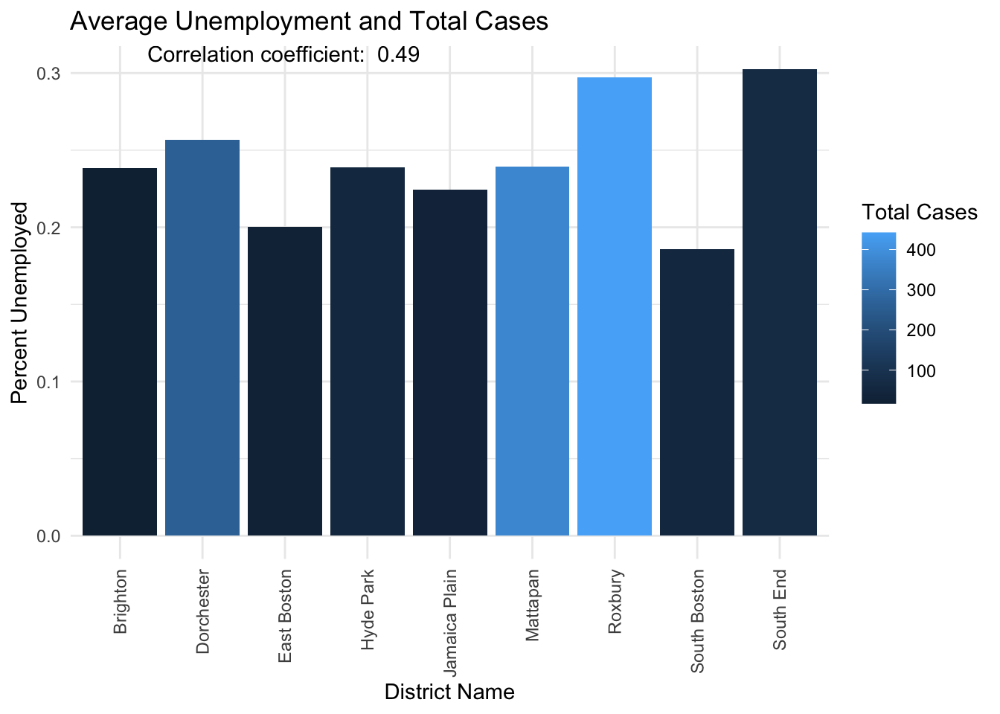

Breaking Boston’s Silence: Does Socioeconomic Status Hold the Key to Gun Violence?
In the heart of Boston, an unsettling pattern emerges—gun violence casts a long shadow across its diverse neighborhoods. But what factors contribute to this grave issue? Our comprehensive analysis over the past decade seeks to uncover whether socioeconomic status could be the central factor in understanding and perhaps mitigating this violence.
At the center of our study is a hypothesis: Add final hypothesis. By examining data from various neighborhoods, we explore how income, employment, education and race relate to the frequency of shootings.
Visual Analysis: The Story Through Numbers
Neighborhood Impact: Boston’s Safety Divide
The distribution of gun violence across Boston reveals significant disparities that echo through its neighborhoods. The bar chart above showcases the total number of shooting incidents by district, highlighting a varied landscape of safety across the city. Notably, districts like Mattapan, Roxbury and Dorchester experience far higher frequencies of violence compared to quieter areas like the East Boston and Brighton. This visualization not only illustrates these differences but sets the stage for a deeper exploration of underlying causes. What can these variations tell us about the resources and challenges faced by residents of different districts?
The Relationship Between Income and Safety
As we delve deeper into the socioeconomic layers of Boston, our analysis shifts to one of the most telling indicators of community safety: economic stability. In this section, we examine how the average median income across Boston’s neighborhoods correlates with the number of shooting incidents they experience. The upcoming graph will visually showcase this relationship, revealing how economic conditions might directly influence the safety and wellbeing of residents.
`geom_smooth()` using formula = 'y ~ x'The graph presents a compelling narrative, where districts with higher average median incomes typically report fewer shooting incidents. This moderate inverse relationship highlights economic stability as a potential buffer against violence.
Notably, neighborhoods like South Boston and the South End, which feature higher income levels, also exhibit lower rates of gun violence, contrasting sharply with areas like Mattapan and Roxbury. These findings suggest that improving economic conditions in lower-income districts could be a key strategy in reducing violence.
Employment Status—A Safety Indicator?
Turning our focus to employment, we examine another vital socioeconomic indicator that may significantly influence urban safety: unemployment rates across Boston’s districts. The following graph presents the correlation between average unemployment rates and the total number of shooting incidents, offering insights into how joblessness might exacerbate the risks of violence. With a correlation coefficient of 0.49, the data suggest a substantial link between higher unemployment and increased shooting incidents, hinting that employment stability could be a pivotal factor in enhancing community safety.

The graph depicts a clear trend where districts with higher unemployment rates, such as Mattapan and Roxbury, also report a greater number of shooting incidents. This visualization highlights the potential role of economic distress, manifesting as unemployment, in contributing to social instability and violence. Particularly striking is the high unemployment and corresponding high number of cases in Mattapan, underscoring the urgency for targeted economic and employment support in such areas. On the other hand, districts like South Boston and the South End, which feature relatively lower unemployment rates, witness fewer shootings, supporting the theory that job creation and economic vitality might serve as effective deterrents to violence. This data not only enhances our understanding of the socioeconomic underpinnings of gun violence but also underscores the importance of employment initiatives as a strategy for crime prevention and community development.
Educational Attainment and Community Safety
Education shines through as a potential beacon of hope. Districts with higher percentages of bachelor’s degree holders, such as Brighton and the South End, report fewer violent episodes. This trend is visually represented and suggests that enhancing educational opportunities could serve as a preventive measure against urban violence.

The above graph illustrates the percentage of the population with bachelor’s degrees by district alongside the total number of shooting cases. It is evident that districts like Brighton and South Boston, which boast higher percentages of degree holders, report significantly fewer shootings compared to areas like Mattapan and Dorchester, where fewer residents have completed higher education. This visual trend is supported by the correlation coefficient, reinforcing the idea that education may serve as a protective factor against violence.